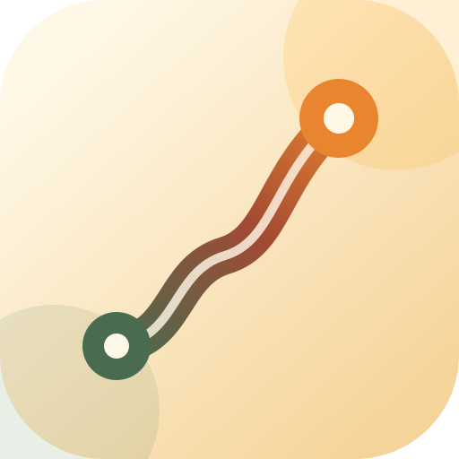

你想怎么称呼我？
不需要先填一份人生问卷。名字和形象只是我们开始说话的方式，以后随时能改。

不需要先填一份人生问卷。名字和形象只是我们开始说话的方式，以后随时能改。
这不是固定人设。相处越久，我越会从你的反馈里学会合适的分寸。
长期记忆默认只保存在这台设备。只有你明确同意后，我才会把当次对话所需的信息交给你选择的云端模型。
不用填问卷。你说生活里正在发生什么，我会在对话中慢慢认识你。
不是固定课表。每一项都会根据你的状态重新判断。
先聊聊你正在经历什么。信息不够时，学程不会用通用任务填满这里。
这里记录方向的变化，也保留她为什么这样建议。
在你确认之前，学程不会擅自给你贴目标或能力标签。
这是现在的方向，不是永远不能改变的身份标签。
默认使用学程图标，也可以换成你喜欢的图片。
她会像一位了解你的朋友，也会在需要时挑战你。
只调整称呼与表达，不套用性别刻板印象。
只改变空间明暗，森林绿与微光点缀保持不变。
当前测试版的 Key 只保留到本次页面或应用会话结束；不会写入长期记忆或备份。接入 iPhone 系统安全凭据前，不会长期保存密钥。
备份包含你的对话、偏好和 Agent 对你的本地认识；恢复前会再次确认。